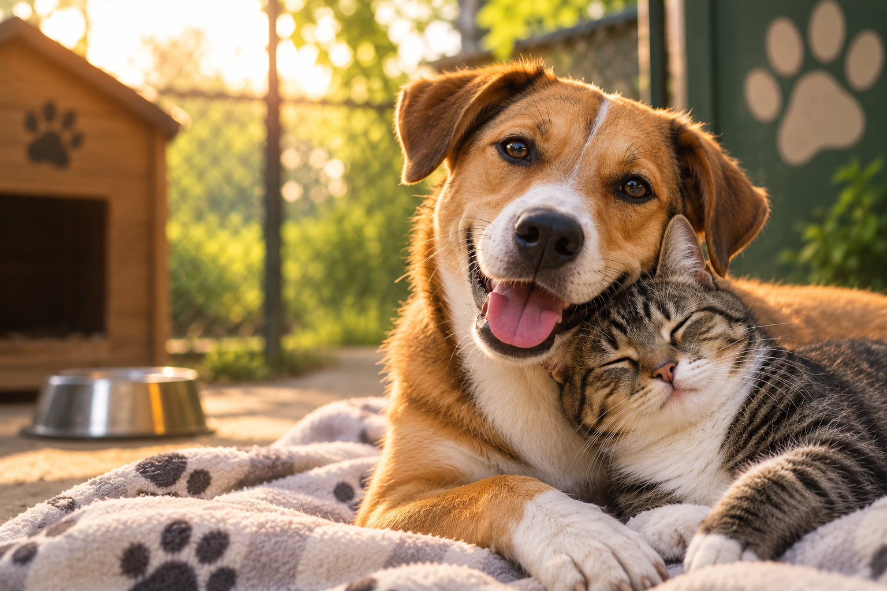
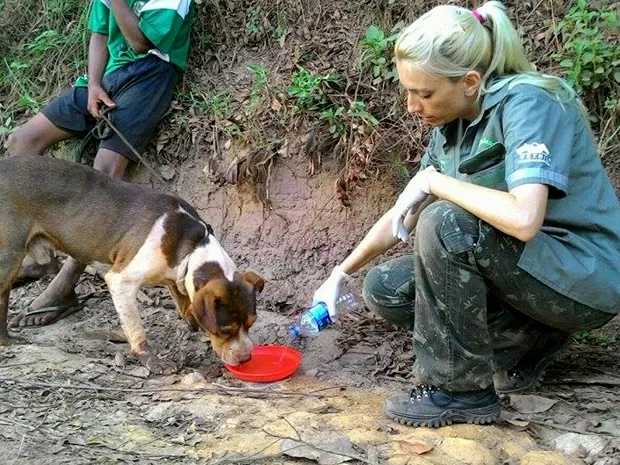

Quem somos?
Somos uma organização dedicada à proteção e adoção responsável de animais. Nosso objetivo é oferecer cuidado, carinho e segurança aos animais que precisam de um lar, conectando cada um deles a famílias que possam proporcionar amor e qualidade de vida. Acreditamos que todo animal merece uma segunda chance e trabalhamos para construir um futuro com mais respeito e menos abandono.

Como Funciona Nosso Serviço?
Nosso trabalho começa com o resgate de animais abandonados ou em situação de risco. Após o resgate, oferecemos cuidados, alimentação, atendimento veterinário e todo o carinho necessário para sua recuperação. Depois, os animais são preparados para a adoção responsável, buscando famílias que possam oferecer um lar seguro, amoroso e cheio de felicidade.
